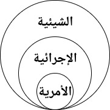
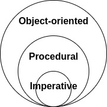
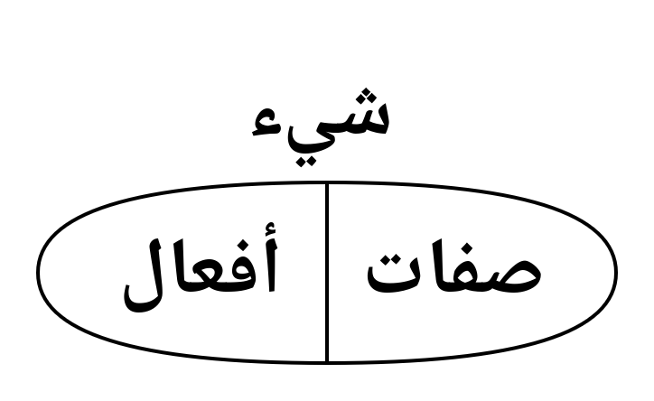

graph TD
A[<b>شيء</b> <br> <code>Object</code>] --> B[<b>رقم</b> <br> <code>Number</code>]
B --> E[<b>صحيح</b> <br> <code>int</code>]
B --> F[<b>عشري</b> <br> <code>float</code>]
B --> G[<b>مركب</b> <br> <code>Complex</code>]
A --> D[<b>جمع</b> <br> <code>Collection</code>]
D --> M[<b>تسلسل</b> <br> <code>Sequence</code>]
M --> C[<b>نص</b> <br> <code>str</code>]
M --> H[<b>قائمة</b> <br> <code>list</code>]
M --> I[<b>صف</b> <br> <code>tuple</code>]
M --> J[<b>نطاق</b> <br> <code>range</code>]
D --> K[<b>مجموعة</b> <br> <code>set</code>]
D --> L[<b>قاموس</b> <br> <code>dict</code>]
19 الأنواع
وقد عرفنا أن من طرائق البرمجة في بايثون:
- الأمرية (Imperative): تعليمات ينفذها البرنامج بتسلسل
- الإجرائية (Procedural): إجراءات تستدعي إجراءات بشكل هرمي
- والآن نعرف أنها أيضًا شيئية (Object-oriented): أشياء لها صفات وأفعال وتفاعلات مع أشياء أخرى قد تنتمي إلى نفس النوع


وقد كنا نتعامل مع أشياء طيلة هذه الفترة؛ بدءًا بالرقم (Number) ومرورًا بفروعه: (int) و (float) و (bool)، مرورًا بالقائمة (list) والصف (tuple) والنطاق (range) والنص (str)، وكذلك المجموعة (set) والقاموس (dict).
وكل الأنواع من نوع شيء (Object). ثم تتفرع الأنواع وتتفرع. وقد يدخل النوع في أكثر من نوع بحسب الاعتبار (يأتي تفصيله).
البرمجة الشيئية
ففكرة البرمجة الشيئية تدور حول إسناد المتغيرات والإجراءات لشيء مُعَيَّنٍ من نوع ما. ونشبه هذه الأشياء بالمحسوسات فيقال أنها أشياء ذات صفات وأفعال؛ إشارةً إلى المتغيرات والإجراءات المسندة إليها. ومن هذه الأفعال ما يكون بين الأشياء؛ فهو تفاعل بين نوع ونوع.

فمثلاً: نوع القائمة (list) يُنشأُ مِنهُ قائمة معيَّنة (هي الشيء: xs = [1, 2, 3]) يُسنَدُ إليها إجراءات الإضافة (xs.append) والحذف (xs.remove) والتعديل (xs[i] = x) ونحو ذلك.
وأما التفاعلات؛ فهي علي قسمين:
الأول: بين الشيء ونظيره (من نفس النوع)؛ وذلك نحو تعريف: list + list = list بحيث تعرَّف علامة + بين الشيئين بعملية الدمج (لا الجمع). وكان من الممكن أن تعرَّف بأنها جمع.
الثاني: بين الشيء وخلافه (من نوع آخر)؛ وذلك نحو: list.append(Any) فإن القائمة تقبل في فعل الإلحاق (append) أي نوع. ويمكن تقييد النوع الذي يقبله الفعل كما كنا نفعل في الإجراءات؛ إذْ الأفعال ما هي إلا إجراءات مُسندة إلى نوع.
تعريف النوع
الشيء: صفات وأفعال.
تأمل المثال التالي:
- النوع (Class):
Counter - الصفات (Properties): فقط
count - الأفعال (Methods):
increment
لاحظ:
- يتم إسناد المتغيرات للمعيَّن في فعل الإنشاء
__init__ - تتقدَّم
self(نفس) كعامل في الابتداء في جميع الأفعال؛ وهي تشير إلى الشيء المعيَّن (Instance) ؛ أي: أحد أفراد النوع.
إنشاء المعيَّنات
المعيَّن: أحد أفراد النوع.
ويسمى الفعل المخصوص __init__ بفعل الإنشاء (Initialization). وذلك أنه يتم تنفيذه عند استدعاء النوع هكذا:
ونشير للصفة بعلامة النقطة: c1.count والفعل كذلك: c1.increment() على النحو التالي:
وهذا معيَّن آخر من نفس النوع:
تغليف العمليات
التغليف (Encapsulation) آلية لإخفاء عمليات تفصيلية معقدة على البيانات المكنونة خلف إجراءات بسيطة.
فحينما عرفنا المتغير كصفة: count في الشيء Counter، أبرزنا من الإجراءات: increment فقط. وكأننا نقول: لا يمكن أن يعدِّل المستفيد على المتغير count إلا عن طريق الإجراء increment. وصحيح أنك تستطيع الوصول من الخارج إلى صفة المعيَّن: c1.count لتعديلها مباشرةً، إلا أن ذلك يخالف آلية التغليف.
في المثال التالي لا نريد للمستفيد أن يعدِّل على الرصيد balance إلا عن طريق الإجراء deposit الذي يضمن أمرين:
- قبليات (pre-conditions): كاشتراط أن الزيادة تكون موجبة قبل البدء
- بعديات (post-conditions): ضمان تسجيل تاريخ العملية بعد التمام
يتم ذلك في بايثون عن طريق جعل الصفة نفسها (balance) مخفيَّة، ونبدلها بصفة محميَّة: __balance بشرطتين سفليتين متقدِّمة. ثم نُبرِزُ الصفة عن طريق فعل قراءة؛ وذلك باستعمال المعدِّل @property، وهو يجعل الفعل balance يبرز كصفة بلا قوسين للاستدعاء balance() وذلك يعني أن مجرَّد عملية الوصول إلى الصفة (بعلامة النقطة: .) هو في الحقيقة استدعاء لفعل يعود بقيمة، لا بالصفة التي يمكن تعديلها.
class Account:
def __init__(self, name, balance):
self.name = name
self.__balance = balance
# الإيداع
def deposit(self, amount):
# قبليات الإيداع
if amount <= 0:
print("must be positive")
return
# الإيداع نفسه
self.__balance += amount
# بعديات الإيداع
print('time of deposit:', '2027-07-07')
@property
def balance(self):
return self.__balanceنقوم الآن بإنشاء هذا الشيء الذي يمثِّل حساب المستخدم (Account)، ثم نصِل إلى الصفة بعلامة النقطة: a1.balance؛ فيكون ذلك استدعاءً للإجراء الذي تم وضع المعدِّل @property عليه ليكون الوصول إليه كالصفة:
ولو حاولت التغيير مباشرة على الصفة فإنك أصلاً لن تجد اسمها مُسندًا إلى الشيء:
--------------------------------------------------------------------------- AttributeError Traceback (most recent call last) Cell In[26], line 1 ----> 1 a1.balance = 1000 AttributeError: property 'balance' of 'Account' object has no setter
لكن يجوز فقط قراءة الصفة (قيمتها) لا التعديل عليها، هكذا (بعد الإيداع مثلاً):
وليظهر أثر الحماية، نجرِّب إيداع مبلغ سالب، ولاحظ رسالة الخطأ:
وهكذا نتصوَّر الشيء كأنه آلة مزوَّّدة بآليات عامَّة يسهل استعمالها في ظروف كثيرة بحيث تغير هذه الآليات من حالة الشيء في كل مرة ليؤدي وظائف معقَّدة لا تتم بسهول بمجرَّد إجراء ذو خطوات محددة دائمًا بتسلسل واحد.
العرض
نريد أن نعرِّف نوعًا جديدًا للإحداثيات (Point) ونريد أن نعرضها في جملة print بتمثيل يعبِّر عنها كإحداثيات.
يستعمل الفعل الخاص __repr__، ويعني التمثيل (Representation) لتخصيص طريقة عرض الشيء؛ سواءٌ إذا تم تمرير في print أو في آخر سطر من الخلية. كل ما عليك هو إعادة قيمة نصيَّة من ذلك الفعل.
والآن إن عرفنا نقطة جديدة، ووضعناها على السطر لوحدها ، ستظهر لنا الإحداثيات، لا عنوانها في الذاكرة:
الإجراء الثابت
الإجراء الثابت: هو الإجراء المسند إلى النوع لا للمعيَّن.
فيمكن إسناد الإجراء للجنس لا للشيء الواحد، وذلك بإضافة المعدِّل @staticmethod عليه. ونمثل لذلك بإجراء حساب المسافة بين نقطتين: distance. ولاحظ عدم وجود self فيه:
class Point:
def __init__(self, x, y):
self.x = x
self.y = y
def __repr__(self):
return f"Point({self.x}, {self.y})"
@staticmethod
def distance(p1, p2, distance_type='euclidean'):
if distance_type == 'euclidean':
return ((p1.x - p2.x)**2 + (p1.y - p2.y)**2)**0.5
elif distance_type == 'manhattan':
return abs(p1.x - p2.x) + abs(p1.y - p2.y)ثم يستعمل كأي إجراء، لكن بإسناده إلى النوع:
المتغير الثابت
المتغير الثابت: هو المتغير المسند إلى النوع لا للمعيَّن.
يُسنَد المتغير للنوع بتعيينه بمحاذاة غيره من الإجراءات نحو ما فعلنا هنا بالمتغير decor. ولاحظ استعماله في الإجراء __repr__ في جملة if-else من غير استعمال self لأننا لا نشير إلى معيَّن.
فيمكن الآن تعديل المتغير decor للنوع:
هيكل البيانات
تختلف كفاءة استرجاع البيانات وكتابتها والتعديل عليها بحسب شكل هذه البيانات في الذاكرة وشكلها على جهاز التخزين فعليًّا. وهذا ما نسميه بهيكلة البيانات (Data Structure). ومن أمثلة ذلك:
- المصفوفة (Array)
- الشجرة (Tree)
- الرسم (Graph)
وغيرها كثير. وسنمثل على ذلك بتشكيل الكومة في بايثون:
الكومة (Stack)
نريد أن نعرِّف نوعًا من هياكل البيانات يسمى الكومة (Stack)، وكأنه يمثِّل مجموعة مكدسة من الأوراق؛ إذ له فعلين:
- وضع ورقة:
push(item)وكأنك تضع ورقة فوق الأوراق السابقة - سحب ورقة:
pop()وكأنك تسحب ورقةً من الأعلى - لمحة سريعة:
peek()وكأنك تنظر إلى الورقة العليا دون سحبها
وأقرب شيء له في بايثون هو القائمة (list) ولذلك ستكون هي تمثيلها الداخلي.
- فعل الإنشاء يُسنِد قائمة فارغة إلى الشيء (
self) - فعل
pushيضيف إلى آخر هذه القائمة بالفعلappend - فعل
popيأخذ آخر عنصر من القائمة بالفعلpop(وهو إزالة مع أخذ) - فعل
__repr__يعطينا تمثيلاً للكومة بالاعتماد على تمثيل القائمة
نجرب الآن أن ننشئها ثم نضع أربعة عناصر فيها ونظهرها:
والآن نسحب عنصرًا (من الأخير)، ونظهرها:
ويمكن النظر في العنصر الأعلى دون سحبه بالفعل peek: